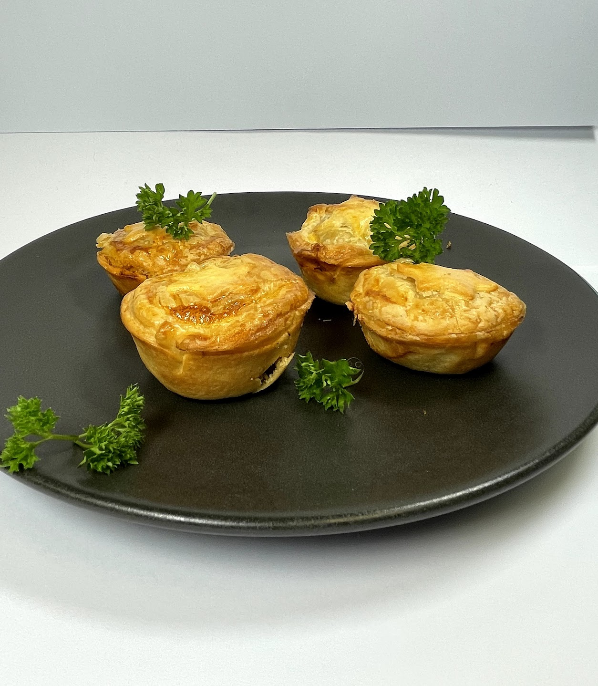
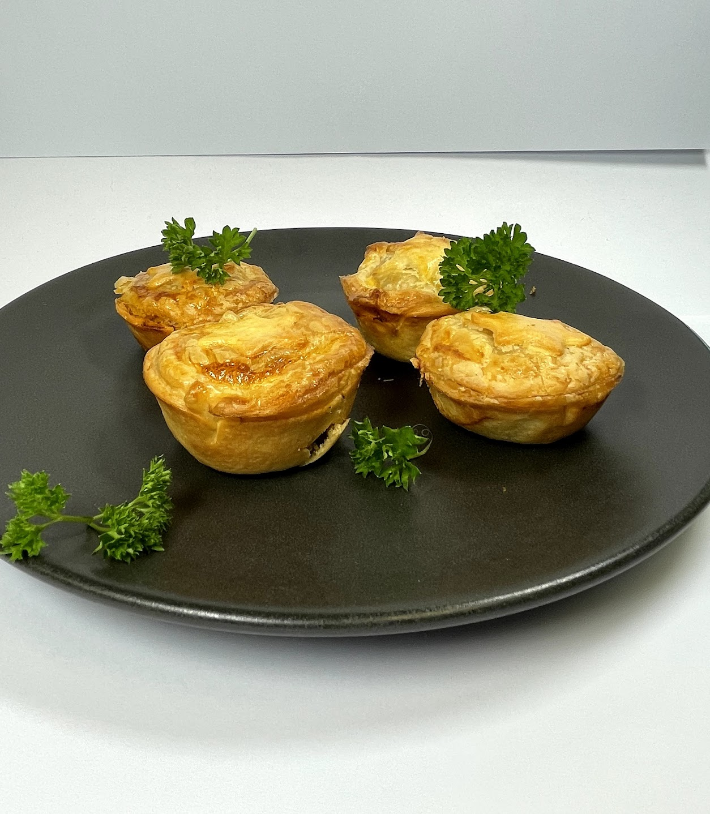

Welcome to the Food Technology Showcase at the Saint Kentigern Digital Showcase
of Tech Creations!
Get ready for a mouthwatering adventure into the world of food. Our talented students
from Saint Kentigern College, in years 11-13, have been cooking up some seriously
delicious creations. Starting at 6:45 PM, we'll kick things off with some tasty
finger foods. Then, dive into the incredible dishes our students have cooked up.
From scrumptious appetizers to heavenly desserts, you'll experience the magic of our
Food Tech department. Join us for a night filled with fantastic food, celebrating the skills
and dedication of our young chefs. It's an evening of flavor and fun that you won't
want to miss!
Jam lolly chocolate cheesecake:
Indulge in a tantalizing tasty treat, that combines contrasting textures and only the favourite flavours in perfect harmony. This dessert begins with a buttery biscuit base, providing a delicate crunch that gives way to the heart of the creation. At its core lies a delightful surprise - a luscious jam lolly that bursts with fruity goodness, adding a burst of sweetness to every bite. The magic continues as a velvety layer of rich chocolate cheesecake envelops the desert, creating a sumptuous contrast between the smoothness of chocolate and the playfulness of the jam lolly. The decadent chocolate shell adds an element of luxury to every mouthful, making each bite an experience to savour. As a final flourish, a sprinkling of raspberry powder graces the top, infusing a vibrant and tangy note that complements the richness of the chocolate.This delicous dessert is crafted by jodie. (See photo slider for photo)
Food
Technolgy
Food on
Display
Here is some of the most delectable food on display you must try:
Caramel raspberry dome:
This dessert is a shortbread
biscuit base with a dome of homemade raspberry marshmallow, covered in a layer
of caramel, which is then encased with a layer of chocolate mousse. These
three components are framed with a dark chocolate dome. This dessert
was accidentally inspired by the kiwi classics the chocolate bar
‘Pinky’ and the iconic Mallowpuff. I hope you indulge in the symphony
of flavours that have produced, this elevated dessert experience
is a sublime masterpiece that is promised to awaken your palate and
captivate your senses. This delicous dessert is crafted by Charlotte.
(See photo slider for photo)
Mango Lassi multilayer dessert:
Indulge in the perfect harmony of flavours and textures with this Mango Lassi Multilayer Dessert. Immerse yourself in the tropical delight of juicy mango compote, exquisitely layered over a light and fluffy sponge cake base. The velvety richness of whipped yogurt complements the vibrant sweetness of the mango, creating a symphony of taste that dances on your palate. Each spoonful is a journey through layers of culinary artistry, blending the timeless appeal of traditional mango lassi with a modern twist. Elevate your dessert experience with this masterpiece that captures the essence of summer in every bite. This delicous dessert is crafted by Alexia.


 
